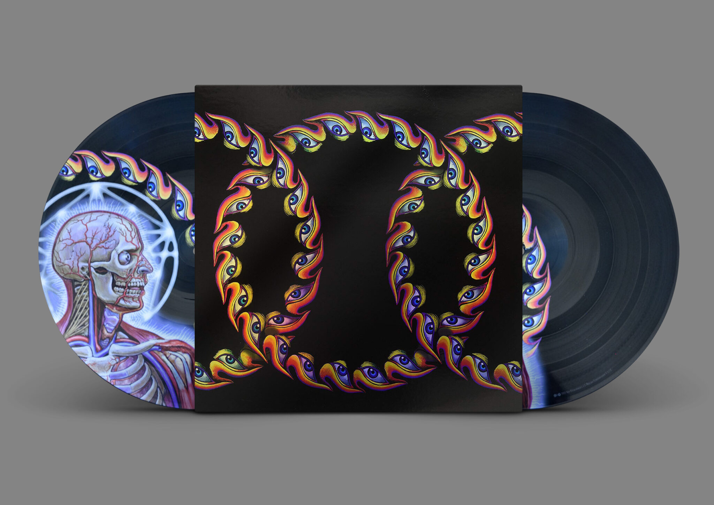

About Me
About Me

TOOL LATERALUS (PIC LP)
$80.00 Available
Lateralus is the third studio album by American rock band Tool. It was released on May 15, 2001, through Volcano Entertainment.
The album was recorded at Cello Studios in Hollywood and The Hook, Big Empty Space, and The Lodge, in North Hollywood, between October 2000 and January 2001.
The album was recorded at Cello Studios in Hollywood and The Hook, Big Empty Space, and The Lodge, in North Hollywood, between October 2000 and January 2001.
Description
Tool - Lateralus - Vinyl
Fifty-one months after Lateralus' original release in CD format, Tool is ready to release a double vinyl four-picture disc edition of Lateralus. Each side contains a different picture and is packaged in a plastic gatefold with a holographic foil.
Track List
- Disc 1 (A): “The Grudge”, “Eon Blue Apocalypse” and “The Patient Mantra”
- Disc 1 (B): “Schism”, “Parabol”, “Parabola” and “Disposition”
- Disc 2 (C): “Ticks & Leeches” and “Lateralus”
- Disc 2 (D): “Reflection”, “Triad” and “Faaip De Oiad”